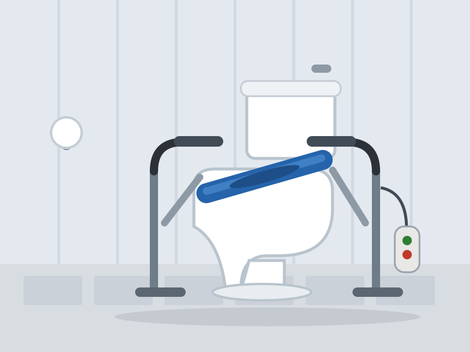

AmeriGlide Toilet Incline Lift — available from AmeriGlide. Illustration by HomeEnabled, based on the manufacturer's current model.
Nobody wants to talk about this product, and everybody who needs it is glad it exists. Rising from a toilet demands more knee and hip strength than almost any other daily movement — the seat is lower than a chair, there are no armrests, and the floor is often slick. For many older adults it becomes the first activity that requires calling a family member for help, and that loss of privacy stings more than any other.
The AmeriGlide Toilet Incline Lift returns that privacy. It's a powered frame that installs over your existing toilet: a padded seat tilts up and forward to receive you at a much easier height, then lowers you gently and fully onto the toilet. When you're done, it raises you smoothly back up and forward onto your feet. Sturdy armrests flank the whole journey.
The HomeEnabled Verdict: The product nobody mentions and nobody returns. It restores the most personal kind of independence there is, and for the right household it's worth every cent.
Why It Made Our List
We chose the incline lift over the more common 'toilet seat risers' and spring-assisted seats because it solves the entire movement, not a fraction of it. Risers reduce the distance you must lower yourself; the incline lift eliminates the lowering altogether, powered through the full range with you in control of the button.
For couples and care households, this device frequently removes the single most frequent assistance call of the day — and the most awkward one. Caregivers tell us it changed the emotional weather of the whole house.
Key Features
- Full powered travel — lowers you completely onto the toilet and raises you back to a near-standing posture — no drop, no push-off.
- Padded inclining seat — tilts to meet you at an easy height and keeps you supported through the whole motion.
- Fixed armrests both sides — stable grip points through sitting, rising and clothing adjustment.
- Fits existing toilets — installs over standard and elongated bowls without plumbing changes.
- Simple two-button control — large up/down buttons; nothing to program or misread.
- Battery-backed operation — keeps working through a power outage.
Specifications at a Glance
| Weight capacity | 300 lb |
|---|---|
| Compatible toilets | Standard and elongated bowls |
| Motion | Powered incline — full lower and raise |
| Armrests | Fixed, both sides |
| Controls | Wired two-button handset |
| Power | Standard outlet with battery backup |
| Installation | Over existing toilet; no plumbing work |
| Warranty | Limited manufacturer warranty |
Pros & Cons
What We Love
- Restores fully private toileting for most users
- Powered through the entire motion — no risky free-fall or push-off
- No plumbing changes; installs over the existing toilet
- Armrests provide secure grip the whole way
- Battery backup covers outages
Worth Considering
- Significantly pricier than passive seat risers
- Adds visual bulk to a small bathroom
- Requires a nearby outlet
Who It's For
This lift is for anyone who can stand and pivot but can no longer lower themselves to, or rise from, toilet height — common with arthritis, Parkinson's, MS, and after strokes or joint surgery. It shines brightest in households where a spouse or adult child is currently providing this assistance and both parties would rather they didn't have to.
If you only need a modest boost, a quality raised seat with armrests costs a tenth as much; if transfers require full assistance, discuss a ceiling-track or patient-lift solution with an occupational therapist instead.
Price & Where to Buy
At $1,995 the incline lift looks expensive next to a $150 seat riser — until you price the alternative it actually replaces, which is human assistance several times daily. Measured against the cost of in-home care visits or the loss of independent living, it's one of the fastest payback periods in this guide.
AmeriGlide Toilet Incline Lift
🔄 Price tracked automatically · last verified February 26, 2026. Sale pricing and availability may change at any time.
Frequently Asked Questions
Does it work with my existing toilet?
Yes — the frame installs over standard and elongated household toilets without altering plumbing. You'll need a grounded outlet within reach of the power cord.
How is this different from a raised toilet seat?
A raised seat shortens the distance you must lower yourself under your own power. The incline lift powers the entire motion in both directions, removing the strength requirement rather than reducing it.
Can two people in the home still use the toilet normally?
Yes. The seat parks in a raised-incline position but other household members can use the toilet conventionally; the frame is designed for shared bathrooms.
The Bottom Line
The product nobody mentions and nobody returns. It restores the most personal kind of independence there is, and for the right household it's worth every cent. As always: measure twice, talk with the rider, and when in doubt, ask an occupational therapist to look at your specific home. If you have questions this review didn't answer, write to us — we read everything.